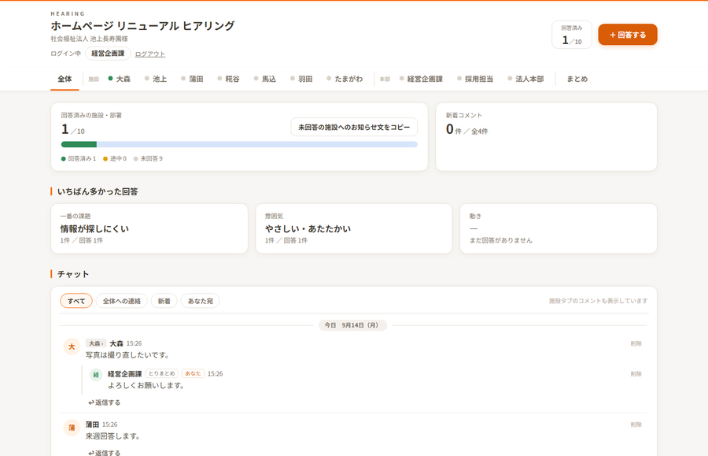
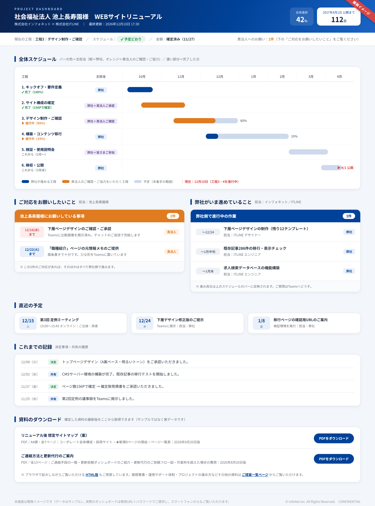
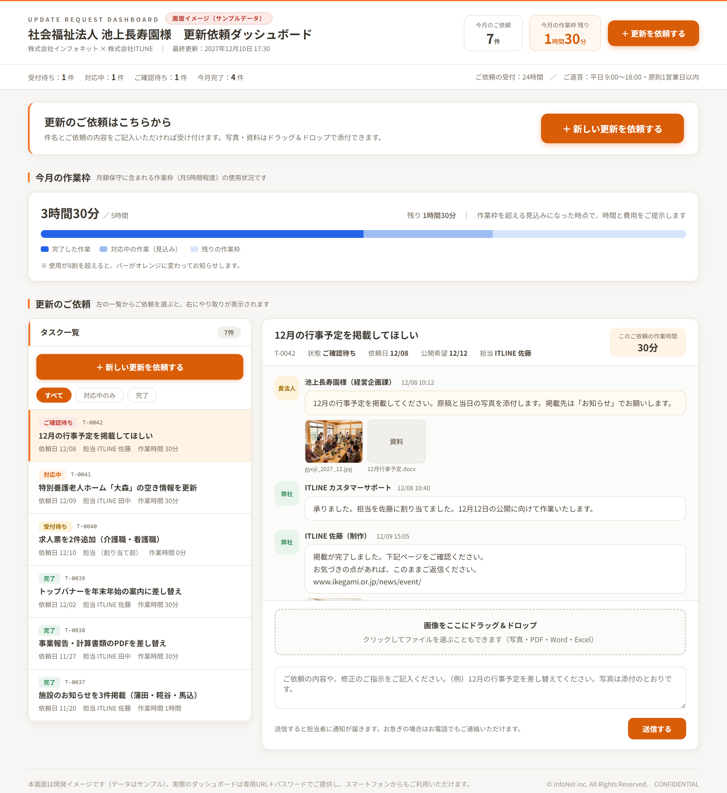

1
ご提案
リニューアルのご提案の本編です。まずはこちらをご覧ください。
株式会社インフォネット（制作パートナー：株式会社ITLINE）｜2026年8月5日（2026年9月15日 改訂）
リニューアルのご提案の本編です。まずはこちらをご覧ください。
プロジェクトで使う画面です。ヒアリングダッシュボードは実際にログインしてお使いいただけます。



ログイン画面：https://itline-pf.com/pj-6d4ddf873d/
ログイン画面で「所属（施設・部署）」を選び、下の表のパスワードを入力してください。
| 所属（施設） | パスワード |
|---|---|
| 大森 | dgyr5389 |
| 池上 | rpzq5756 |
| 蒲田 | ctud9859 |
| 糀谷 | cbkw4472 |
| 馬込 | qfju6623 |
| 所属（施設・本部） | パスワード |
|---|---|
| 羽田 | tkms6269 |
| たまがわ | anuz5367 |
| 経営企画課（とりまとめ） | nqtu7836 |
| 採用担当 | hfpp8785 |
| 法人本部 | ddky4487 |
※ 各施設・部署：自施設の回答、写真の送付（1施設10枚まで）、全体タブと自施設タブへのコメントができます。
※ 経営企画課：すべてのタブへのコメント、紙で回答された内容の代理入力、まとめ欄の記入・確定ができます。
※ デモ期間中の共通のログイン情報です。本番の運用を始める時点でパスワードを変更し、あらためてお知らせします。
※ 画面の使い方だけをご覧になる場合は、画面イメージ（サンプルデータ）もご利用いただけます。
| 提案依頼書のご要件 | 対応資料 |
|---|---|
| 提案資料（デザイン案2案以上） | ✔ 御提案書＋デザイン案A／B |
| リニューアル後の想定サイトマップ | ✔ 想定サイトマップ（画面／PDF・7ページ） |
| 御見積書（明細付・一式不可） | ✔ 別途ご提示（全項目明細） |
| 詳細なスケジュール表 | ✔ 御提案書 P14 |
| 体制（構築時・運用時） | ✔ 御提案書 P13＋追加資料 P11 |
| 会社概要・実績 | ✔ 御提案書 P16＋追加資料 P13〜P22 |
| ISMS等の情報セキュリティ | ✔ 御提案書 P16（ISO27001／27017 登録番号明記）＋追加資料 P3〜P4 |
| 現行環境・データ移行 | ✔ プロジェクトの進め方 第3部（移行計画編） |
| 運用体制・サポート（ヘルプデスク／研修／更新代行） | ✔ 運用サポート体制のご説明（22ページ） |
| ご連絡手段・更新代行のご依頼方法／超過時の費用／ご自身での更新手順 | ✔ ご連絡方法と更新代行のご案内（11ページ） |
| GA4の設定・検索対策（SEO） | ✔ 御提案書 P11（GA4設定）＋ SEO対策と構造化データのご案内（8ページ） |